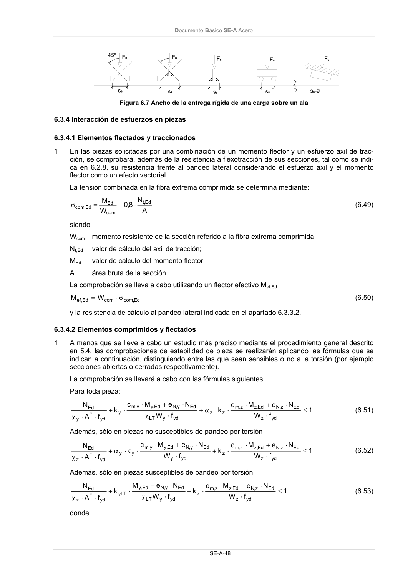

DB-SE-A Acero · edición 2007-10-23 · capa oficial
Documento DB-SE-A-oficial · SHA-256 del PDF 9ed9ea694aabfbda3bfbbef40dfe9223fde05d13c35bc2ba9751e5a96a22a64f
Página física 50 de 168.
Copia fiel del PDF fuente · Fuente oficial
Ficha de la disposición en la fuente oficial
Formato: Texto de la página (Markdown)
Documento Básico SE-A Acero SE-A-48 Figura 6.7 Ancho de la entrega rígida de una carga sobre un ala 6.3.4 Interacción de esfuerzos en piezas 6.3.4.1 Elementos flectados y traccionados 1 En las piezas solicitadas por una combinación de un momento flector y un esfuerzo axil de trac- ción, se comprobará, además de la resistencia a flexotracción de sus secciones, tal como se indi- ca en 6.2.8, su resistencia frente al pandeo lateral considerando el esfuerzo axil y el momento flector como un efecto vectorial. La tensión combinada en la fibra extrema comprimida se determina mediante: A N 8,0 W M Ed ,t com Ed Ed , com ⋅ − = σ (6.49) siendo Wcom momento resistente de la sección referido a la fibra extrema comprimida; Nt,Ed valor de cálculo del axil de tracción; MEd valor de cálculo del momento flector; A área bruta de la sección. La comprobación se lleva a cabo utilizando un flector efectivo Mef,Sd Ed , com com Ed , ef W M σ ⋅ = (6.50) y la resistencia de cálculo al pandeo lateral indicada en el apartado 6.3.3.2. 6.3.4.2 Elementos comprimidos y flectados 1 A menos que se lleve a cabo un estudio más preciso mediante el procedimiento general descrito en 5.4, las comprobaciones de estabilidad de pieza se realizarán aplicando las fórmulas que se indican a continuación, distinguiendo entre las que sean sensibles o no a la torsión (por ejemplo secciones abiertas o cerradas respectivamente). La comprobación se llevará a cabo con las fórmulas siguientes: Para toda pieza: 1 f W N e M c k f W N e M c k f A N yd z Ed z, N Ed ,z z, m z z yd y LT Ed y, N Ed ,y y, m y yd * y Ed ≤ ⋅ ⋅ + ⋅ ⋅ ⋅ α + ⋅ χ ⋅ + ⋅ ⋅ + ⋅ ⋅ χ (6.51) Además, sólo en piezas no susceptibles de pandeo por torsión 1 f W N e M c k f W N e M c k f A N yd z Ed z, N Ed ,z z, m z yd y Ed y, N Ed ,y y, m y y yd * z Ed ≤ ⋅ ⋅ + ⋅ ⋅ + ⋅ ⋅ + ⋅ ⋅ ⋅ α + ⋅ ⋅ χ (6.52) Además, sólo en piezas susceptibles de pandeo por torsión 1 f W N e M c k f W N e M k f A N yd z Ed z, N Ed ,z z, m z yd y LT Ed y, N Ed ,y yLT yd * z Ed ≤ ⋅ ⋅ + ⋅ ⋅ + ⋅ χ ⋅ + ⋅ + ⋅ ⋅ χ (6.53) donde
